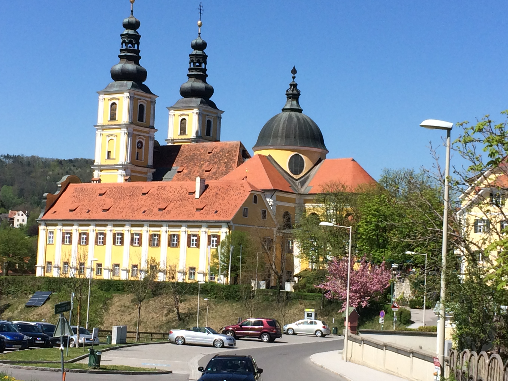

Berge und Landschaften der Steiermark
Basilika Mariatrost
Plabutsch
Riegersburg
Rote Wand
Steiermark
Basilika Mariatrost
Bitte klicken Sie auf das Bild, um mehr Informationen über die Basilika Mariatrost zu erhalten!

Back to top